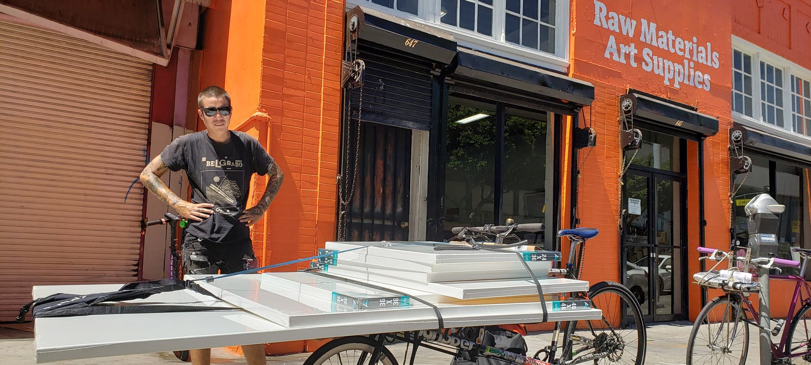

Biocoop ou Greenweez, quel site choisir pour ses courses bio en ligne ?
Le même panier commandé sur les deux sites, frais et délais relevés.

Panier identique commandé sur chaque site, frais de port et délais relevés, avis Trustpilot lus. Nous classons les sites sur les mêmes critères.

Le même panier commandé sur les deux sites, frais et délais relevés.

Panier relevé chez 8 enseignes, gammes comptées, avis lus. Une enseigne sort du lot.
Note globale sur 10 sur la vente en ligne. Les frais de livraison et le délai comptent autant que le prix.
Voir la méthode de notation


Comparez deux sites sur nos cinq critères en un clic.
Biocoop obtient 8,0/10 grâce au retrait en magasin sous deux heures et à un panier proche de celui du magasin. Greenweez suit à 7,8 avec la gamme la plus large.
Greenweez offre la livraison dès 49 € d'achat, Biocoop dès 60 € en ville, Carrefour à partir de 100 €.
Oui, de 4 à 8 € par commande selon nos relevés, et le retrait chez E.Leclerc et Biocoop est gratuit sans minimum.
Cinq critères sur 10, prix du panier livré, largeur de gamme, proximité et délais, avis clients, note globale pondérée.
Greenweez et Biocoop proposent des formats vrac reconditionnés en sachets de 500 g à 5 kg, à un prix au kilo inférieur de 8 à 15 % au rayon.
Un email par semaine avec le classement du mois, les nouveaux comparatifs et les baisses de prix relevées en rayon.
Pas de publicité, désinscription en un clic.